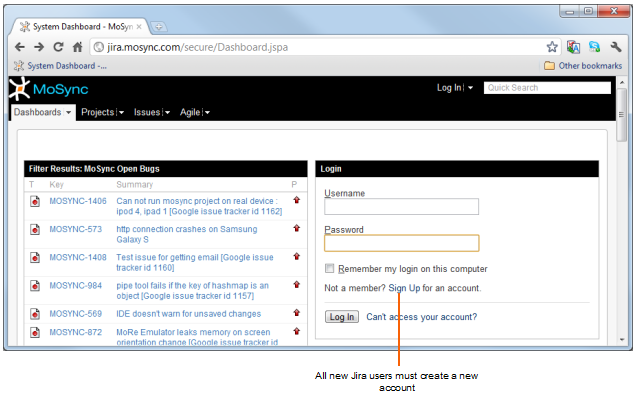
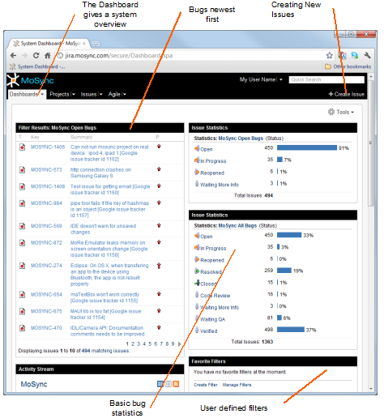
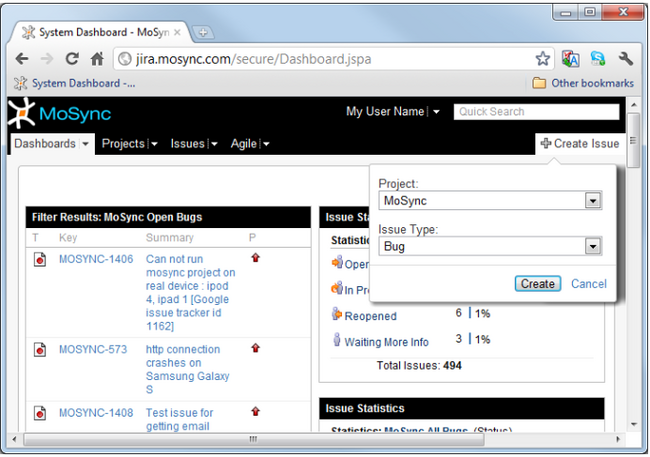
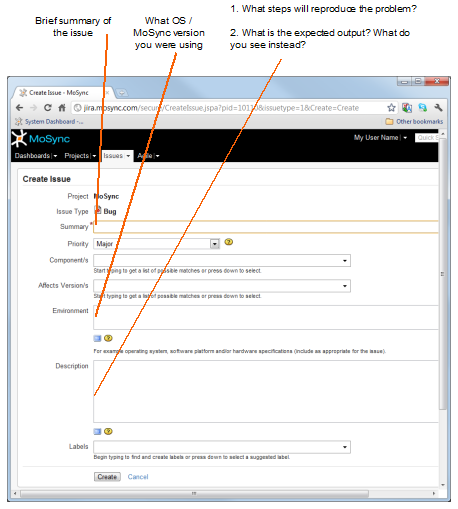

The MoSync Issue Tracker is based on Jira and can be found here: jira.mosync.com. Jira allow users to see more than just one project at a time and ongoing work for up-and-coming releases and is integral in our development.
Note: To post or follow issues you will need to create a user ID on Jira.

Follow the instructions and log in.
Next you will be presented with a dashboard. This gives an overview of the MoSync project.

At the top right there is a button to create an issue. This screen allows you to define if this issue is a Bug or New Feature. These are currently the only two issue types open to users.

The following screen shows what we would like you to fill in as a minimum.

Issues are usually resolved in 7 stages:
| Open | A newly reported issue, no action taken yet |
| Accepted | A developer has accepted the issue and will soon start working on it |
| In Progress | A developer is working on the issue |
| Resolved | The developer feels that the issue has been dealt with. |
| Code Review | The code is read is ready for code review. |
| Waiting QA | The code has been merged and QA can build and verify the issue is resolved. In most cases the fix will be in the next nightly build. |
| Verified | The QA department has checked the solution and has agreed that it is fixed |
Some things to keep in mind before reporting an issue:
If you have suggestions for improving MoSync, enter it as an issue into the Jira issue tracker. Provide as much information as you like. We love feedback, and we are more than happy to let our user base help us determine the direction of development.
If you are missing a feature in MoSync, why not write it up? The development team keeps a close watch on the Issue Tracker so your queries and posts will usually be attended to within a few days. We are committed to providing the best possible user experience. Help us make MoSync the most powerful mobile development solution on the planet!